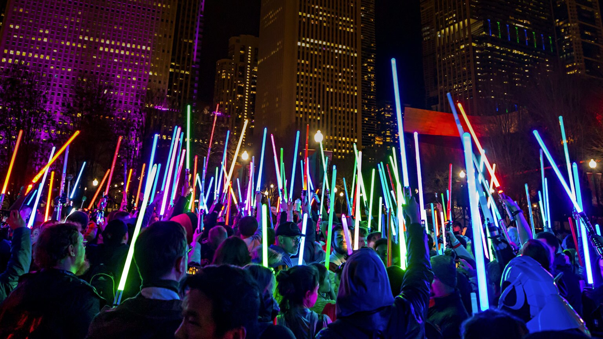

EVENTOS
El centro de Star Wars Celebration
Un fenómeno de convención: El mandoverse
La serie The Mandalorian se ha convertido en el pilar principal de todas las convenciones oficiales de fans, Star Wars Celebration. Cada año, los paneles con Jon Favreau, Dave Filoni y el elenco son los más concurridos, siendo el lugar donde se anuncian todos los grandes proyectos de la era post-Imperial (o "Mandoverse"), como las series Ahsoka y El Libro de Boba Fett. Históricamente, el creador Jon Favreau y el productor ejecutivo Dave Filoni son los encargados de subir al escenario para presentar adelantos exclusivos, trailers inéditos y las grandes noticias sobre el futuro de las series interconectadas, conocidas colectivamente como el "Mandoverse".
CURIOSIDADES
La Influencia del Cine Japonés
Homenaje a Akira Kurosawa y los Samuráis
La influencia de la cultura japonesa y, en particular, del cine de Akira Kurosawa, no es nueva en Star Wars; George Lucas se inspiró en su película La Fortaleza Escondida para crear la trilogía original. The Mandalorian retoma esta inspiración de manera mucho más directa. El concepto de un guerrero con armadura que sigue un estricto código de honor y viaja por tierras lejanas como un protector errante es un reflejo claro del Bushido, el código ético del samurái. El Mandaloriano asume el rol del Ronin—un samurái sin amo ni clan. Muchos episodios de la serie replican directamente las tramas de Kurosawa. Por ejemplo, episodios donde Mando y Grogu llegan a un pequeño pueblo agrícola y deben proteger a los campesinos de bandidos (piratas o restos imperiales) son un homenaje claro a Los Siete Samuráis. El personaje de Din Djarin es, en esencia, un pistolero Ronin que cambia su armadura Beskar por la katana y el obi tradicionales.

CURIOSIDADES
El Homenaje a Boba Fett
La Armadura Rescatada de Boba Fett
La influencia de la cultura japonesa y, en particular, del cine de Akira Kurosawa, no es nueva en Star Wars; George Lucas se inspiró en su película La Fortaleza Escondida para crear la trilogía original. The Mandalorian retoma esta inspiración de manera mucho más directa. El concepto de un guerrero con armadura que sigue un estricto código de honor y viaja por tierras lejanas como un protector errante es un reflejo claro del Bushido, el código ético del samurái. El Mandaloriano asume el rol del Ronin—un samurái sin amo ni clan. Muchos episodios de la serie replican directamente las tramas de Kurosawa. Por ejemplo, episodios donde Mando y Grogu llegan a un pequeño pueblo agrícola y deben proteger a los campesinos de bandidos (piratas o restos imperiales) son un homenaje claro a Los Siete Samuráis. El personaje de Din Djarin es, en esencia, un pistolero Ronin que cambia su armadura Beskar por la katana y el obi tradicionales.